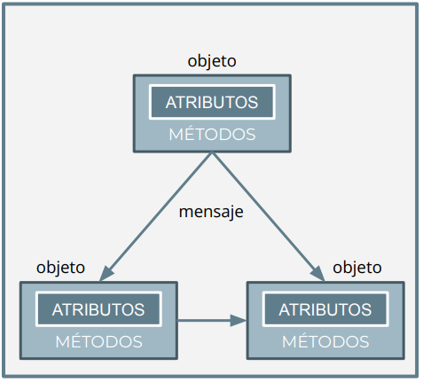

Una clase representa al conjunto de objetos que tienen unas características comunes. Si volvemos al ejemplo del triángulo, sabemos que hay de distintos tipos: rectángulo, equilátero, isósceles... Pero todos tienen algo en común: base y altura. Pero en este caso, la POO va más allá, y nos permite hacer analogía más allá de la lógica y las matemáticas. Podríamos definir, por ejemplo, una clase Persona con su edad, nombre, DNI, etc.
Los datos que resumen dichas características comunes y las operaciones que se pueden hacer con ellos reciben el nombre de atributos y métodos, respectivamente, de modo que los métodos operan sobre los atributos de la clase. Podría entenderse una clase como una plantilla con las características y comportamientos comunes de los objetos, lo que permite definirlos y crearlos.
public class Persona {
//atributos
String nombre;
String dni;
int edad;
}¿Y los objetos?
Como ya hemos ido hablando, las clases son un concepto estático definido en el programa fuente, mientras que los objetos son instancias de una clase. Son entes dinámicos que ocupan memoria en la ejecución de un programa. Por ejemplo, en la clase Persona, tendríamos una serie de atributos o variables que puedan tener en común las personas (edad, nombre, DNI, etc), y unos métodos u operaciones que puede hacer (hablar, andar, comer). Después podemos tener varios objetos de esa clase, por ejemplo, uno con nombre = Andrés y edad = 20, otro con nombre = Silvia y edad = 34, etc.
CLASE
+-----------------+
| Persona |
+-----------------+
| - nombre: String|
| - dni: String |
| - edad: int |
+-----------------+
| + mostrarInfo() |
+-----------------+
OBJETOS
+------------------+ +-----------------------+
| persona1: Persona| | persona2: Persona |
+------------------+ +-----------------------+
| nombre = "Juan" | | nombre = "Ana García" |
| dni = "12345678A"| | dni = "87654321B" |
| edad = 30 | | edad = 25 |
+------------------+ +-----------------------+
En definitiva, es como definir un tipo de dato (clase) y varias variables de ese tipo (objetos), con sus respectivos valores.
Persona persona1 = new Persona("Juan", "12345678A", 30);
Persona persona2 = new Persona("Ana García", "87654321B", 25);Vale... ¿pero cómo se crea una clase?
Toda clase (u objeto) puede estar compuesta por los siguientes elementos:
- Atributos o campos: son las variables o características propias de una clase u objeto. Por ejemplo, como ya sabemos, las personas tienen un nombre, por lo que el nombre sería un atributo de la clase Persona. Los atributos que tienen las clases y objetos pueden ser tipos simples (enteros, reales, booleanos) o compuestos (por ejemplo, arrays, u objetos del tipo de otras clases).
- Mensajes. Un objeto no funciona de forma aislada en un programa, sino que tiene que comunicarse con otros. Para ello, se utilizan los mensajes. En Java, los "mensajes" son básicamente las llamadas a los métodos que permiten que los objetos se comuniquen entre sí.
- Métodos. Un método indica qué debe hacer un objeto cuando recibe cierto mensaje. Además, permite enviar mensajes a otros objetos. Cuando se envía un mensaje a un objeto, es decir, cuando se invoca a un método de dicho objeto, es necesario saber qué hace ese mensaje/método, pero no cómo lo hace. Estructuralmente, la definición y programación equivale a lo que en programación modular se denominaban procedimientos o funciones.

- Constructores. Los constructores son un tipo de métodos que permiten crear objetos de una clase. Para ello, permiten reservar memoria para ellos y guardar los datos de sus atributos y métodos en memoria. Los vemos a continuación.
- Destructores. Los destructores son un tipo de métodos que permiten borrar objetos de una clase, liberando la memoria que estaban ocupando. Algunos lenguajes de programación como Java no requieren de destructores para liberar memoria, ya que disponen de mecanismos que periódicamente eliminan de la memoria aquellos objetos que ya no se están usando. Otros lenguajes como C++ sí que dejan en manos del programador la responsabilidad de liberar la memoria de objetos que ya no necesite, cuando lo considere oportuno.